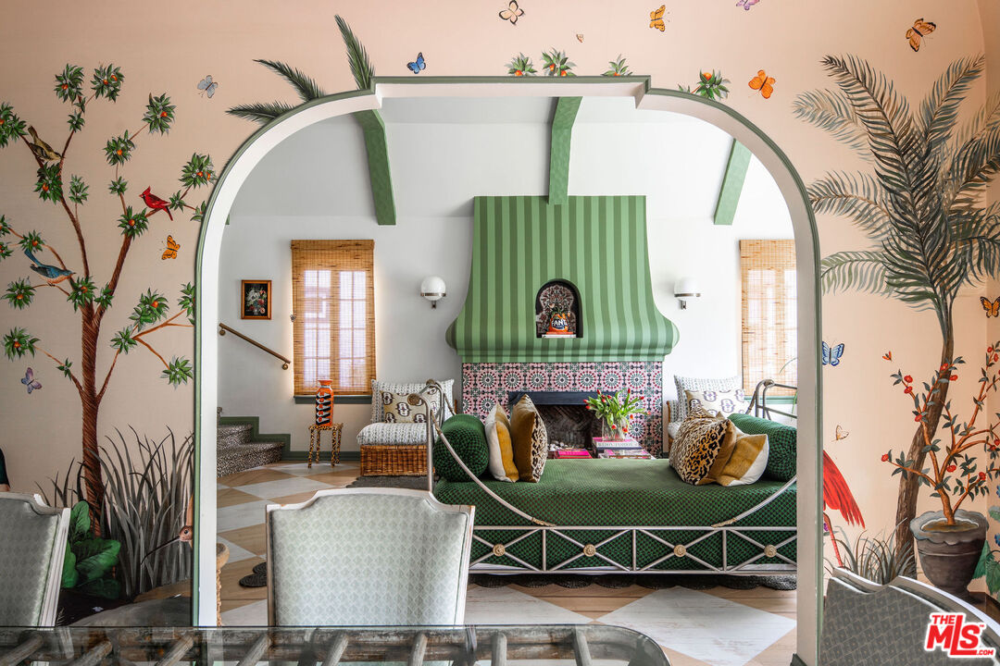
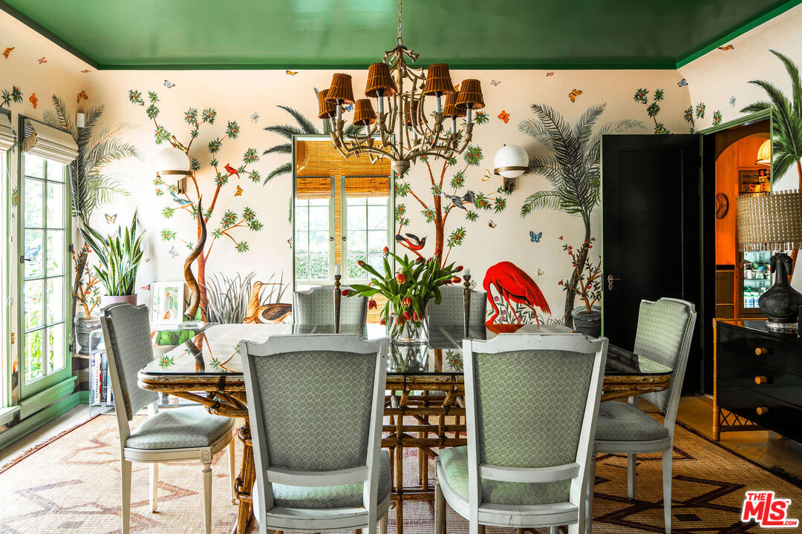
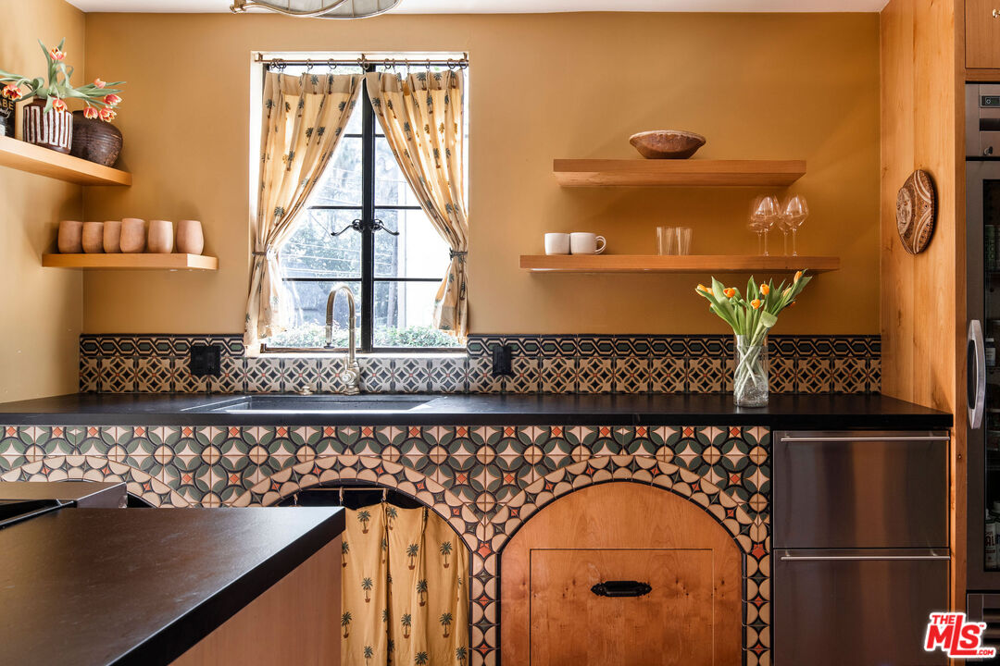
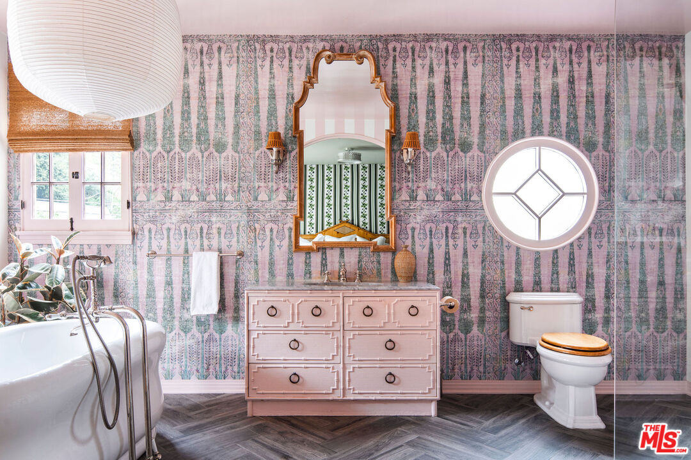

Obsession No. 019The Oaks · Los Feliz
2351 Canyon Dr
The dining room is covered in hand-painted wallpaper, and it is easily the room I would make everyone sit in.
Why it made the edit
“I kept zooming back in on that dining room.”
This one is here because of the dining room. I kept zooming back in on it.
The wallpaper is hand-painted with branches, flowers, birds, and all this color. It could have been too much, but it is not. It just looks like somebody made a real choice and committed to it.
The house was built in 1930 and later redone by designer Carlos Mota, whose work here appeared in Architectural Digest. He added a lot of color and pattern without taking away the things that make it an old Spanish house: the arches, the high living room ceiling, the Juliet balcony, and the tile. I do not want every old house in Los Angeles turned beige, so I appreciate this one.
Upstairs, the primary suite opens through French doors to a bath with a freestanding tub. Out back there is room to eat outside, plus a separate bonus space that could be an office, gym, studio, or guest room.
Four bedrooms, three baths, and 2,142 square feet in The Oaks, listed at $2,499,000. I would still be in the dining room.



Want to see it in person?
Curious about this one?
Let’s talk.
Listed by Anthony Stellini & Sherri Rogers, Compass. House of Zonshine does not represent this listing. Property details are from listing information and public sources and should be independently verified.